<title>mesokla Brandbook</title>
<meta name="claude:viewport-fit-sides" content="cover">
<link rel="preconnect" href="https://fonts.googleapis.com">
<link rel="stylesheet" href="https://fonts.googleapis.com/css2?family=Montserrat:wght@700;800;900&family=Manrope:wght@500;600;700;800&display=swap">
<style>
/* Layout: big colour blocks in the three brand colours only, chapters stacked like the reference cards: label top-left, code right. Single look by choice. */
:root{
  --leaf:#A6B8A0; --violet:#8B729C; --crimson:#E20942;
  --display:"Montserrat",system-ui,sans-serif; --text:"Manrope",system-ui,sans-serif;
  color-scheme:light;
}
*{box-sizing:border-box}
body{background:var(--leaf);color:var(--crimson);font-family:var(--text);font-size:17px;line-height:1.55;margin:0;font-weight:600}
.wrap{max-width:1180px;margin:0 auto;padding-left:max(16px,env(safe-area-inset-left,0px));padding-right:max(16px,env(safe-area-inset-right,0px))}
section{padding-block:88px}
.s-leaf{background:var(--leaf);color:var(--crimson)}
.s-violet{background:var(--violet);color:var(--leaf)}
.s-crimson{background:var(--crimson);color:var(--leaf)}
.label{font-family:var(--text);font-weight:800;font-size:13px;letter-spacing:.18em;text-transform:uppercase}
.s-leaf .label{color:var(--violet)}
h1,h2,h3{font-family:var(--display);font-weight:900;text-transform:uppercase;line-height:.95;letter-spacing:-.01em;margin:0;text-wrap:balance}
h2{font-size:clamp(40px,7vw,88px);margin:16px 0 22px}
h3{font-size:24px;margin-bottom:8px}
p{margin:0;max-width:62ch}
.lead{font-size:20px}
.grid{display:grid;gap:24px}
img,video{max-width:100%;display:block}
figure{margin:0;display:flex;flex-direction:column;gap:12px;min-width:0}
figcaption{font-size:15px}
figcaption b{font-family:var(--display);font-weight:900;text-transform:uppercase;letter-spacing:.02em}

.hero{padding-block:72px 64px}
.hero h1{font-size:clamp(72px,16vw,220px);line-height:.82;letter-spacing:-.03em}
.hero .tag{margin-top:24px;color:var(--violet);font-size:clamp(14px,2vw,22px);letter-spacing:.32em}
.hero p{margin-top:36px}

.cards{display:flex;flex-direction:column;gap:14px;margin-top:32px}
.card{border-radius:6px;padding:28px 32px;min-height:190px;display:flex;justify-content:space-between;align-items:flex-end;gap:16px;flex-wrap:wrap}
.card .n{font-family:var(--display);font-weight:900;text-transform:uppercase;font-size:clamp(30px,5vw,56px);line-height:1}
.card .r{font-size:15px;max-width:40ch;margin-top:8px}
.card .h{font-family:var(--display);font-weight:800;font-size:clamp(18px,2.4vw,26px)}
.c-leaf{background:var(--leaf);color:var(--crimson);outline:3px solid var(--violet);outline-offset:-3px}
.c-violet{background:var(--violet);color:var(--leaf)}
.c-crimson{background:var(--crimson);color:var(--leaf)}

.pairs{grid-template-columns:repeat(3,minmax(0,1fr));margin-top:28px}
.pair{border-radius:6px;padding:22px;font-family:var(--display);font-weight:900;text-transform:uppercase;font-size:32px;line-height:1}
.pair small{display:block;margin-top:12px;font-family:var(--text);font-size:12px;letter-spacing:.12em;font-weight:800}
.never{margin-top:20px;font-size:15px}

.type{grid-template-columns:1.4fr 1fr}
.tcard{border:3px solid currentColor;border-radius:6px;padding:28px;display:flex;flex-direction:column;gap:14px;min-width:0}
.tcard .spec{font-size:12px;letter-spacing:.14em;font-weight:800;text-transform:uppercase}

.shot{border-radius:6px;overflow:hidden}
.banners{grid-template-columns:repeat(2,minmax(0,1fr));margin-top:32px}
.profile{grid-template-columns:repeat(2,minmax(0,1fr));margin-top:40px}
.copy{border:3px solid currentColor;border-radius:6px;padding:20px;display:flex;flex-direction:column;gap:8px}
.copy pre{margin:0;font-family:var(--text);font-weight:600;font-size:16px;white-space:pre-wrap}

.pillars{grid-template-columns:repeat(3,minmax(0,1fr));margin-top:28px}
.pil{border-radius:6px;padding:24px;display:flex;flex-direction:column;gap:10px;min-height:200px}
.pil .label{color:inherit;opacity:.85}
.pil p{font-size:15px}

.posts{grid-template-columns:repeat(2,minmax(0,1fr));margin-top:28px}
.anim{grid-template-columns:1.4fr 1fr;gap:32px;align-items:center}

.cmds{grid-template-columns:repeat(2,minmax(0,1fr));margin-top:28px}
.cmd{border:3px solid currentColor;border-radius:6px;padding:20px;min-width:0}
.cmd p{margin-top:8px;font-size:16px}
.cmd code{display:block;margin-top:12px;font-family:ui-monospace,Menlo,monospace;font-size:12.5px;overflow-x:auto;white-space:pre}
footer{padding-block:40px;background:var(--crimson);color:var(--leaf)}

@media (max-width:860px){
  .banners,.profile,.posts,.cmds,.type,.anim{grid-template-columns:1fr}
  .pillars,.pairs{grid-template-columns:1fr}
}
</style>

<header class="s-leaf hero"><div class="wrap">
  <div class="label">brandbook v2 · x / twitter</div>
  <h1 style="margin-top:22px">mesokla</h1>
  <div class="label tag">smtm sense / smtm mess</div>
  <p class="lead">Три кольори з твого референсу і більше нічого. Великий жирний шрифт великими літерами, рівні плашки кольору, жодних текстур чи декору. Простота тут і є стиль.</p>
</div></header>

<main>
<section class="s-violet"><div class="wrap">
  <div class="label">01 · колір</div>
  <h2>Тільки три кольори</h2>
  <p class="lead">Ні білого, ні чорного. Один з трьох кольорів стає фоном, другий іде на текст, третій на одну плашку-виділення.</p>
  <div class="cards">
    <div class="card c-leaf"><div><div class="n">Leaf Skin</div><div class="r">Основний фон профілю і корисних постів.</div></div><div class="h">#A6B8A0</div></div>
    <div class="card c-violet" style="outline:3px solid var(--leaf);outline-offset:-3px"><div><div class="n">Muted Violet</div><div class="r">Треди, анонси, колаби. Виділення на листовому фоні.</div></div><div class="h">#8B729C</div></div>
    <div class="card c-crimson"><div><div class="n">Electric Crimson</div><div class="r">Головний текст на листовому фоні, хот-тейки, акценти.</div></div><div class="h">#E20942</div></div>
  </div>
  <div class="grid pairs">
    <div class="pair c-leaf" style="outline:none">Leaf<small style="color:var(--violet)">фон leaf · текст crimson · виділення violet</small></div>
    <div class="pair c-violet">Violet<small>фон violet · текст leaf · виділення crimson</small></div>
    <div class="pair c-crimson">Crimson<small>фон crimson · текст leaf · виділення violet</small></div>
  </div>
  <p class="never">Ніколи: малиновий текст на фіолетовому і фіолетовий на малиновому, бо ці кольори зливаються. Текст завжди листовий або на листовому.</p>
</div></section>

<section class="s-leaf"><div class="wrap">
  <div class="label">02 · шрифти</div>
  <h2>Жирно і великими</h2>
  <div class="grid type" style="margin-top:28px">
    <div class="tcard"><div class="spec" style="color:var(--violet)">Заголовки · Montserrat Black 900 · капс</div><div style="font-family:var(--display);font-weight:900;font-size:clamp(44px,7vw,84px);line-height:.92;text-transform:uppercase">Hook first.<br>Then <span style="background:var(--violet);color:var(--leaf);padding:0 .12em">value</span>.</div><p style="font-size:15px">Заголовки, вордмарк, головна думка посту. Міжрядковий 0.92–1, без курсиву. Одне слово можна виділити плашкою.</p></div>
    <div class="tcard"><div class="spec" style="color:var(--violet)">Дрібний текст · Manrope 600–800</div><div style="font-size:26px;font-weight:700;line-height:1.3">Post when your audience is awake.</div><div class="label" style="color:var(--violet)">Thread · 1 / 9</div><p style="font-size:15px">Пункти списків, підписи, хендл. Для кікерів капс з розрядкою.</p></div>
  </div>
</div></section>

<section class="s-crimson"><div class="wrap">
  <div class="label">03 · профіль</div>
  <h2>Банер і профіль</h2>
  <p class="lead">Чотири банери 1500×500. Нижній лівий кут лишається порожнім, бо там аватар.</p>
  <div class="grid banners">
    <figure>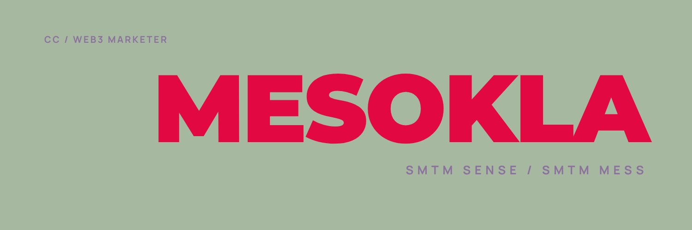<figcaption><b>Leaf</b> · основний</figcaption></figure>
    <figure>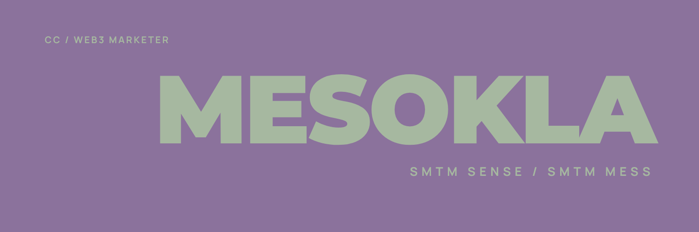<figcaption><b>Violet</b> · запасний</figcaption></figure>
    <figure>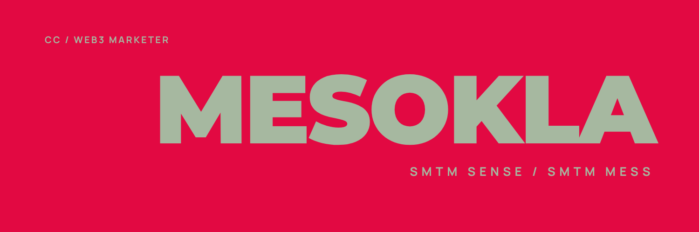<figcaption><b>Crimson</b> · на час кампанії</figcaption></figure>
    <figure>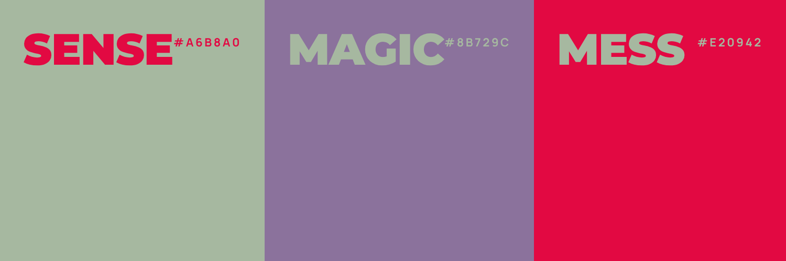<figcaption><b>Stripes</b> · палітра як банер</figcaption></figure>
  </div>
  <div class="grid profile">
    <div class="copy"><div class="label">біо</div><pre>cc / web3 marketer @solus_group
smtm sense, smtm mess
dm for collab</pre></div>
    <div class="copy"><div class="label">аватар</div><pre>Твоє фото на однотонному листовому або фіолетовому тлі (фон можна прибрати в Canva), щоб аватар і банер були однієї гами.</pre></div>
  </div>
</div></section>

<section class="s-leaf"><div class="wrap">
  <div class="label">04 · рубрики</div>
  <h2>Колір = тип посту</h2>
  <div class="grid pillars">
    <div class="pil c-leaf"><span class="label">theme=leaf</span><h3>Sense</h3><p>Тули, фреймворки, чеклісти. Пости, які зберігають.</p></div>
    <div class="pil c-violet"><span class="label">theme=violet</span><h3>Threads &amp; collabs</h3><p>Обкладинки тредів, спейси, анонси.</p></div>
    <div class="pil c-crimson"><span class="label">theme=crimson</span><h3>Mess</h3><p>Хот-тейки, факапи, думки о другій ночі.</p></div>
  </div>
</div></section>

<section class="s-violet"><div class="wrap">
  <div class="label">05 · візуали до постів</div>
  <h2>Шаблони</h2>
  <p class="lead">16:9 (1600×900) для стрічки X і 4:5 (1080×1350) для каруселей і Instagram. Будь-який шаблон працює в будь-якій з трьох тем.</p>
  <div class="grid posts">
    <figure>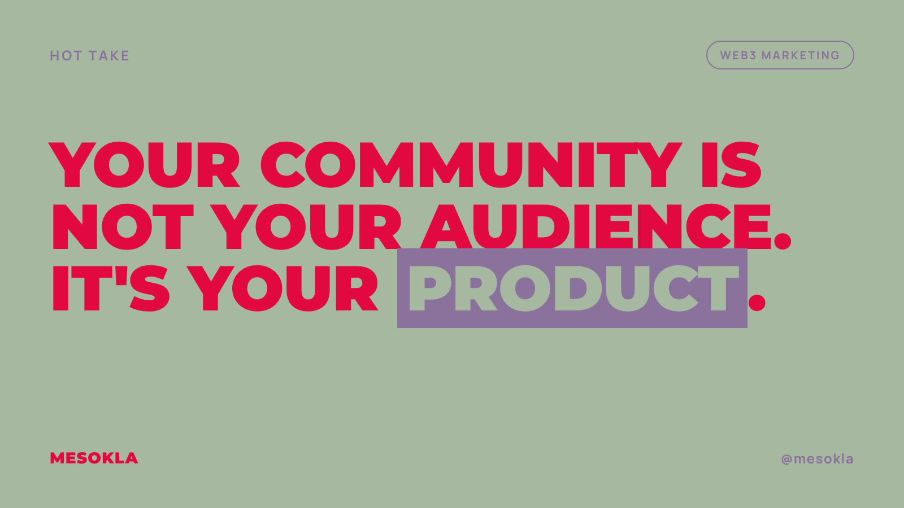<figcaption><b>quote</b> · хот-тейк, цитата</figcaption></figure>
    <figure>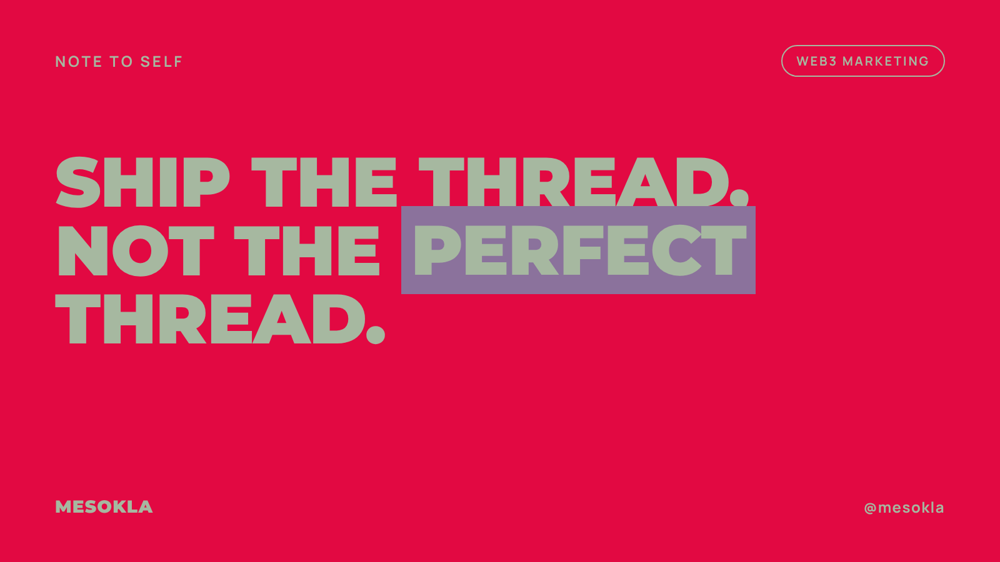<figcaption><b>quote · crimson</b> · той самий шаблон в іншій темі</figcaption></figure>
    <figure>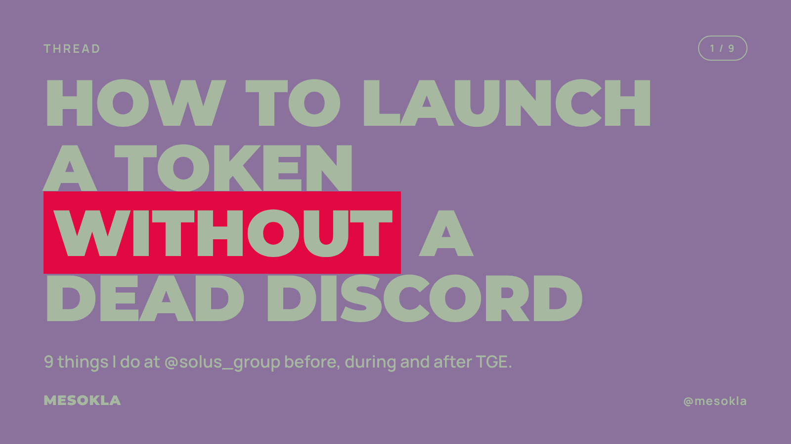<figcaption><b>thread</b> · перший твіт треду</figcaption></figure>
    <figure>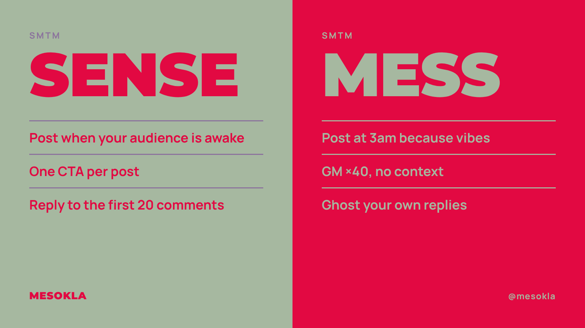<figcaption><b>sense-mess</b> · фірмовий формат з твого біо</figcaption></figure>
    <figure>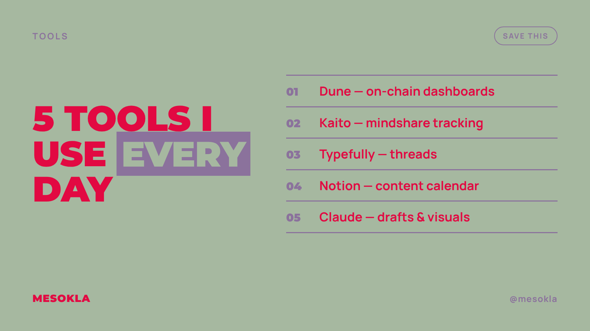<figcaption><b>list</b> · 3–6 пунктів</figcaption></figure>
    <figure>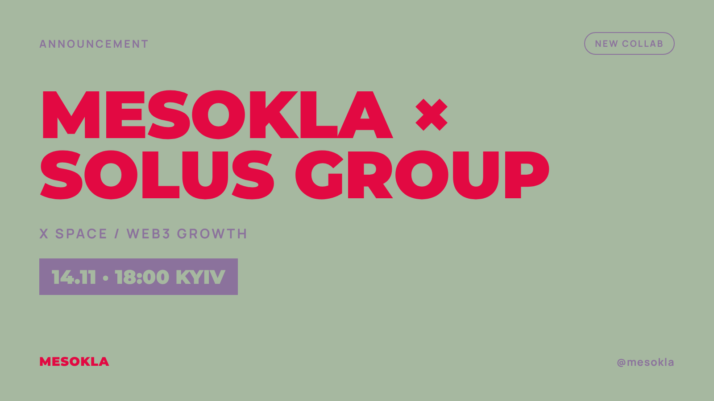<figcaption><b>collab</b> · колаби, спейси, івенти</figcaption></figure>
    <figure style="max-width:420px">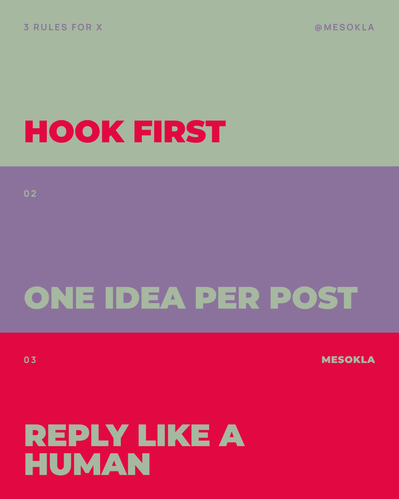<figcaption><b>stack</b> · 4:5, три смуги як у референсі, по одній думці на смугу</figcaption></figure>
  </div>
</div></section>

<section class="s-leaf"><div class="wrap">
  <div class="label">06 · відео</div>
  <div class="grid anim" style="margin-top:16px">
    <figure><video class="shot" src="out/intro.mp4" autoplay muted loop playsinline controls aria-label="Анімоване інтро: кольорові смуги відкривають напис MESOKLA"></video></figure>
    <div><h2 style="font-size:clamp(36px,5vw,60px)">Інтро 4 секунди</h2><p>Фіолетова і малинова смуги заїжджають і роз'їжджаються, а під ними з'являється MESOKLA. Підходить на початок або кінець відео. Будь-який шаблон можна так само анімувати і зрендерити в MP4.</p></div>
  </div>
</div></section>

<section class="s-crimson"><div class="wrap">
  <div class="label">07 · скіл</div>
  <h2>Як користуватися</h2>
  <p class="lead">Пак лежить у репозиторії як скіл mesokla-brand. Пиши Claude, що потрібно, і він збере візуал за цими правилами.</p>
  <div class="grid cmds">
    <div class="cmd"><div class="label">хот-тейк</div><p>«Зроби візуал до твіту: community is your product»</p><code>node scripts/render.mjs quote out/x.png \
  "text=Your community is your *product*."</code></div>
    <div class="cmd"><div class="label">тред</div><p>«Обкладинка треду про KOL-кампанії, 7 твітів»</p><code>node scripts/render.mjs thread out/t.png \
  "title=KOL campaigns *that* work" count="1 / 7"</code></div>
    <div class="cmd"><div class="label">sense vs mess</div><p>«Зроби sense vs mess про запуски»</p><code>node scripts/render.mjs sense-mess out/sm.png \
  "sense=Brief with KPIs|Mid-tier KOLs" "mess=Pay for a tweet|Pray"</code></div>
    <div class="cmd"><div class="label">банер і відео</div><p>«Онови банер під кампанію» або «Зроби інтро»</p><code>node scripts/render.mjs banner out/b.png theme=crimson
node scripts/video.mjs templates/intro.html out/i.mp4 4</code></div>
  </div>
</div></section>
</main>
<footer><div class="wrap label">mesokla · leaf #A6B8A0 · violet #8B729C · crimson #E20942</div></footer>
